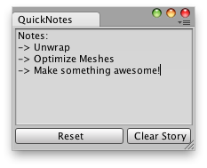

EditorPrefs.GetString 获取字符串
static function GetString (key : string, defaultValue : string = "") : string
Description描述
Returns the value corresponding to key in the preference file if it exists.
如果存在，返回相应偏好设定文件的键值。
If it doesn't exist, it will return defaultValue.
如果不存在，将返回默认值。

Quick notes that last between Unity Sessions.
Unity Sessions 最后的快速快速笔记
// Simple Editor Script that lets you create / save quick notes
// Between Unity Sessions.
//让你创建/保持快速笔记，在 UnitySessions
class QuickNotes extends EditorWindow {
var note : String = "Notes:\n->\n->";
@MenuItem("Examples/QuickNotes")
static function Init() {
var window = GetWindow(QuickNotes);
window.Show();
}
function OnGUI() {
note = EditorGUILayout.TextArea(note,
GUILayout.Width(position.width-5),
GUILayout.Height(position.height - 30));
EditorGUILayout.BeginHorizontal();
if(GUILayout.Button("Reset"))
note = "";
if(GUILayout.Button("Clear Story",GUILayout.Width(72))) {
note = "Notes:\n->\n->";
}
EditorGUILayout.EndHorizontal();
}
function OnFocus() {
if(EditorPrefs.HasKey("QuickNotes"))
note = EditorPrefs.GetString("QuickNotes");
}
function OnLostFocus() {
EditorPrefs.SetString("QuickNotes",note);
}
function OnDestroy() {
EditorPrefs.SetString("QuickNotes",note);
}
}最后修改：2011年7月11日 Monday 16:45